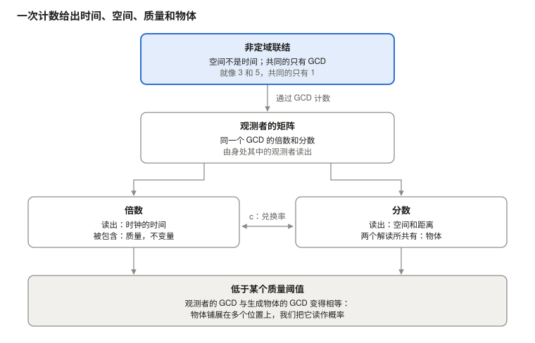

谁在执行物理定律？若物质即关系本身，答案是没有人
Ugo Lanciano（乌戈·兰恰诺） · 独立研究者，意大利洛克里 · ORCID 0009-0008-7618-9635
版本 2.68.1, 2026-10-26 · 存档于 Zenodo: 10.5281/zenodo.23672394 · 许可 CC BY 4.0 · 如记录所声明，在 AI 助手的帮助下完成。
学生版 PDF 为英文： PDF，学生版.
阅读路径: 基础：定律为何成立 · 下一篇: MM 2.40.2
第一次来这里？数学物质性概述：8 分钟读完整个框架。
MM 记录 2.68.1（DOI 10.5281/zenodo.23672394）的学生版，在 AI 助手的帮助下根据存档文本写成；存档文本保存在 Zenodo 上。
Ugo Lanciano · ORCID 0009-0008-7618-9635 · 数学物质性（Mathematical Materiality，MM）2.68.1 · 2026 年 10 月 26 日的存档文本
内容是什么。 本文介绍数学物质性（MM），这是一个从关系出发解读物理学的框架。文中给出基本想法，在一只时钟上加以检验，并说明这个框架如何解读空间、物体、质量、量子力学和时间。最后列出哲学家提出的四条反对意见以及作者的回答。
怎样阅读。 本文面向物理学或哲学专业的学生。每个专业词在第一次出现时都有解释。MM 特有的词语也收在文末的词汇表中。工作是如何完成的（预注册、核查、文件）在最后一节讲述。
问题：谁来保证物理定律？
物理定律在任何地方、任何时候都成立。这里的电子和遥远星系里的电子遵循同样的规则。然而没有人执行这些规则：自然界没有警察。那么，是什么在保证它们？
数学物质性（MM）这样回答：物质不是服从一种关系，物质就是这种关系。本文阐述这一论点。然后在一只时钟上实际推演，用到两个已声明的前提。最后说明这个框架如何解读空间、物体、质量、量子和时间。
用三点概括这个想法。
- 定律没有看守者。违反定律的东西并不是不服从：它是另一种东西。
- 关系背后没有另一个世界。我们看到的世界就是这张关系之网，从内部读出。
- 数学之所以对世界有效，是因为它是世界的一种关系的形式，在心智中脱离束缚。
两种经典回答。 这个问题有两种传统回答。两者都在规则和物质之间留下了一道缺口。
- 第一种把定律放在“形式的天国”里，这是一个与事物分离的理念世界，如柏拉图（Plato）所说。这样就不清楚定律如何触及物质。
- 第二种把定律放在我们的语言里：定律会是我们作出的描述。这样就不清楚语言如何猜中世界。
还有一个较新的想法：宇宙会是一场计算机模拟。这个假说用一位程序员取代了形式的天国。Vazza（2025）估算，没有人付得起模拟宇宙的机器所需的能量。
大反转。 MM 不在缺口上架桥：它说并不存在缺口。在这个框架中，这一步叫作大反转。科学已经这样做过五次。有五样东西看起来是物质实体，后来发现是关系：
- 热质，人们曾认为这种流体把热从一个物体带到另一个物体；
- 燃素，人们曾认为这种物质在物体燃烧时离开物体；
- 生命力，人们曾认为它区分了有生命的物质和无生命的物质；
- 以太，人们曾认为光在这种介质中传播；
- 巴黎的千克原器，这个金属圆柱体在很长时间里就是千克本身；今天，千克由一个与普朗克（Planck）常数相联系的比值定义。
每一次，世界都保持原样。MM 把同样的做法用在最后两项上：物质和定律。
框架的词语。 有八个词贯穿全文。这里知道它们的意思就够了；每个词都会在需要的地方再次讲到，文末的词汇表中也有。
- 联结：两个不同的项之间起始的联系。参考例子是数字 3 和 5 之间的联系。
- 非定域：不位于空间和时间之中。这是一种“前几何”的意义，也就是先于几何的意义。它并不表示超距作用（§1）。
- GCD：最大公约数，也就是这两个项唯一的共同部分。对于 3 和 5，它是 1。
- 副本：对联结计数时，共同单位的重复。3 包含 1 的三个副本，5 包含五个。
- 矩阵：GCD 的倍数和分数的集合，由身处其中的人读出。这里的“矩阵”并不是指线性代数中的数表。倍数表现为时间，分数表现为空间。
- 衍射：观测者的矩阵分成分数从而给出一个物体的方式。
- 记录：观测者收集到的东西。在计算中，它是观测者矩阵的转译，由 AI 选定。
- AI 的转译：作者的一句话变成可以计算的量的方式。这是一种选择，文中会加以标明。取决于某一转译的结果涉及的是该转译，而不是前提。
解释性前提（AI）。 文中还有一些“解释性前提（AI）”。它们是人工智能提出的桥梁，连接作者的一句话和这句话在计算中的转译。作者在 10 月 26 日接受把它们写入文中。它们不是作者的论点，并且给他留下了一些未解决的问题（§10）。
1. 起点：两个不同的项，以及它们唯一的共同之处
MM 的哲学前提可以用五句话说完。它们具有 3 和 5 之间关系的逻辑形式。它们是 MM 的公设，就像爱因斯坦（Einstein）建立相对论时的出发点一样：它们不是被证明的，而是要看它们带来的推论。
回顾：算术。 两个整数如果除了 1 之外没有公约数，就称为互质。3 和 5 互质。6 和 9 不互质：它们有公因数 3。最大公约数（GCD）是能同时整除两者的最大的数。最小公倍数（LCM）是同时为两者倍数的最小的数。对于 3 和 5，GCD 是 1，LCM 是 15。
五个前提：
- 开始时有一个差别。 没有一个东西：有一个差别。A 不同于 B。
- 存在是相互的。 两个实体只有通过它们的共同之处才彼此存在。如果毫无共同之处，甚至不能说它们不同。
- 除此之外毫无共同之处的两个实体是互质的。 对两个起始实体，除了它们是两个不同的实体这一事实，也就是“是两个”，不赋予任何东西。所以它们没有共同的复合部分：它们互质，就像 3 和 5。更大的共同部分，比如 6 和 9 共有的 3，会是第三个实体，又需要多一个理由。
- 共同单位被计数。 共同的只剩下单位：GCD(3, 5) = 1。要同时属于两者，单位必须在每一方中被计数：在一方中三次，在另一方中五次。凡是有东西在其中重复的，都有部分、位置和距离：它已经变成定域的，也就是位于空间和时间之中。
- 副本是同一个单位。 单位的三个副本是同一个单位被数了三次。同一个东西的两个副本之间没有距离。所以定域世界在自身之中，伪装成数，携带着它由之出发的那个没有距离的联系。
第一个联结：空间和时间。 第一个联结是空间和时间之间的联结。在它的非定域相中，空间和时间是没有度量的项。只有一个逻辑上的区分：空间不是时间。两者只共有它们的 GCD。当它们被计数时，就成为我们所测量的空间和时间。这个相并不是一个遥远的层次：它存在于每一个地方、每一个瞬间。
联结的四个特征。 3 和 5 之间的关系有四个特征，它们就是联结的特征。
- 没有中介。 3 和 5 由 1 相连，“中间”没有承载这一联系的数。这就是“非定域”的含义：这个关系不位于某个地方或某个瞬间，也不沿着一条路径传播。
- 项并不先于关系。 1 不是一块等着被使用的砖。它是作为两者唯一的共同之处而出现的。
- 计数造出空间和时间。 最小公倍数 15 包含五个 3 和三个 5。在由计数产生的矩阵中，倍数表现为时间，分数表现为空间。当几个计数组合起来时（§2），时间是它们共同的增长，空间是它们的离散度，也就是各个计数彼此相差多远。
- 计数保持联结。 GCD × LCM = 1 × 15 = 3 × 5。无论在定域世界中怎样计数，乘积都仍然是起始关系的乘积。
解释性前提（AI）：为什么是数。 这些数不是空间和时间的量：在非定域相中，空间和时间没有度量。3 和 5 是一种逻辑处境的算术形式：两个不同的项，只有一个单位是共同的。计数是随前提 4 进入的。共同的东西要属于两者，就必须在每一方中出现；而出现多次就已经是计数。两个计数不同，是由前提 1 得出的：两个相等的项会是一个。时钟模型中有一个具体的例子（§2）。在那里，静止的步 (1, 1) 不区分光的两个方向。而两个互质计数之间的不对称，比如 (3, 5)，则被解读为运动。
AI 对时间和空间的解读。 对共同单位可以进行两种运算：乘和除。乘给出一串有序的、不断增大的总数：1、2、3，依此类推。除给出一个保持不变的总数的不同部分。从内部读出，前者就是我们所说的时间，后者就是我们所说的空间。时间和空间并不先于计数：它们是同一个单位的累积和划分的物理名称。
作者的话。 作者这样说（10 月 10 日）：«esiste un gradino sottostante della realtà dove uno strato non locale di logica materiale ha in sé le caratteristiche per generare il gradino di spazio e oggetti sovrastante»（“现实有一个下层台阶，在那里，一个非定域的物质逻辑层自身具有生成上层的空间和物体台阶的特征”）。他还说，常见的错误是从客观空间这一必需要素出发。在 MM 2.30 这一卷中，这就是前几何纲领：在这个纲领中，空间的几何不是出发点，而必须从框架中得出。下面各节说明其中有多少已经完成。
“非定域”是什么意思
非定域性是这个框架的基础。在物理学哲学中，这个词至少有四种意义。MM 使用其中一种，作为推论导出第二种，并排除另外两种。
回顾：贝尔（Bell）定理。 贝尔定理（1964）涉及一起制备、然后在彼此远离的地方测量的两个粒子。贝尔证明，如果下面三个假设同时成立，测量之间的某些关联就无法重现：
- 每个系统都带有自身的属性，由测量揭示（可分离性）；
- 没有任何影响以超过光速的速度传播；
- 测量者选择测量什么，与源的状态无关（测量设置的独立性）。
实验发现的正是那些关联。因此，三个假设中至少有一个必须放弃。
“非定域”的四种意义，以及 MM 如何对待它们：
- 无位置性（前几何）。关系不位于某个地方或某个瞬间。在 MM 中： 这是框架采用的意义，作者在 10 月 13 日予以确认。
- 不可分离性（整体论）。整个系统不能还原为在空间中分开、各有自身状态的部分的并集。在 MM 中： 这是前提的一个推论。一个联结的副本是同一个单位被数了多次，而不是分开的部分。
- 贝尔非定域性。 任何满足贝尔三个假设的说明都无法重现的关联。在 MM 中： 测得的关联是一个数据。在三个假设中，这一前提从根本上放弃了第一个，即可分离性。定域中介的回路模型（§5）则放弃第三个假设，即测量设置相对于源状态的独立性；在这个模型中，联系沿着经过源的光锥往返。没有超距影响。
- 超距作用。 一种影响或信号以超过光速的速度从一个地方传到另一个地方。在 MM 中： 它被排除。没有信号，齐列尔松（Tsirelson）界得到遵守（§5）。
作者的话。 除了 10 月 10 日的那句话，还有三个前提说明非定域如何进入定域世界。
- 10 月 13 日，AI 提议把“非定域”解读为“不位于空间和时间之中”。作者回答：«sì, vale anche per la lettura»（“是的，对解读也成立”）。
- 9 月 24 日：«MCD originale è il passaggio dallo stadio non locale al [locale] della realtà […] la matrice nasce come diffrazione di MCD nello spazio e nel tempo come elementi separati»（“原始 GCD 是现实从非定域阶段到[定域]阶段的过渡[…]矩阵作为 GCD 在空间和时间这两个分开的要素中的衍射而产生”）。
- 10 月 11 日：«è la base non locale della realtà che forza il cosiddetto presente ad una parte parziale della matrice di cui fa parte l'osservatore; il legame non locale "accende" solo parte della matrice totale»（“正是现实的非定域基础，把所谓的现在限制在观测者所属矩阵的一个部分；非定域的联系只‘点亮’整个矩阵的一部分”）。
解释性前提（AI）：不在任何地方，却处处存在。 不在任何地方的东西并不是在“别处”：它没有“哪里”。在定域世界中，它表现为副本。根据前提 5，每个副本都是同一个单位再被数一次。这就是为什么非定域相存在于每一个地方、每一个瞬间，却并不在空间中铺开：每一个地方、每一个瞬间都是它的一个副本。不可分离性由此得出。同一个单位的两个副本不是各有自身状态的两个东西：它们是同一个联结的两个解读。
解释性前提（AI）：过渡与现在。 在作者的句子中，原始 GCD 起着铰链的作用。在那里，原本只是不同的空间和时间找到了共同要素。然后联结开始被计数，矩阵产生，也就是定域世界产生。非定域相并没有停留为一个遥远的起源。根据 10 月 11 日的前提，它在矩阵中选出“点亮”的部分：观测者的现在。而根据 10 月 13 日的回答，“非定域”的意义对解读也成立。还有三个问题没有解决（§10）：是什么让计数开始，是什么把点亮的部分与其余部分区分开，解读在什么意义上是非定域的。
没有主张的内容。 非定域相不传递任何信号或影响。今天它没有可区分的实验特征：在这个框架中它是一个前提。它的作用是为两个事实给出理由。第一：定律在任何地方都相同（§7）。第二：一个纠缠系统的两翼是单一的联结（§5）。一个系统如果有两个部分（即使相距遥远）没有各自分开的状态，就称为纠缠的（“交织在一起的”）：对一方的测量与对另一方的测量相关联。
相近的想法。 其他一些想法与此相似。
- 在 David Bohm（1980）看来，表现为分离的东西都卷入一个不可分割的整体，他称之为“隐缠序”。
- 在 Mark Van Raamsdonk（2010）看来，空间的连通性来自量子纠缠。
- 把不可分离性作为一个不同于定域性的论点，是 Don Howard（1985）的工作，他在爱因斯坦那里发现了它。这也是 Paul Teller（1986）的论点，称为“关系整体论”。
- 关于贝尔非定域性与相对论的关系，参考文献是 Tim Maudlin（2011）。

图 1. 同一个 GCD 的倍数和分数，由身处矩阵之中的人读出，就是时间和空间。当它们被包含或被共有时，就是质量和物体。第 2-6 节按这张图从上到下展开。
2. 由 3 和 5 构成的时钟：从计数到爱因斯坦的时间
反转不只是一个想法：它是一套步骤。在一只时钟上，用两个已声明的前提，可以把它一直推演到具体的数字。结果是：计数副本的时钟显示的是爱因斯坦的固有时。
回顾：相对论。 固有时是随身携带的时钟所显示的时间。狭义相对论说，运动的时钟比静止的时钟显示的时间少。如果时钟以速度 v 运动，因子是 √(1 − v²)，其中 v 以光速为单位。人们使用时空图，时间在纵轴上，空间在横轴上：光线是斜的直线。在时钟相继的两次滴答之间，可以画出一个光菱形，也叫因果菱形。它的边界是从第一次滴答发出的光线（一条向右，一条向左）和到达第二次滴答的光线。沿光的方向测量的菱形两边 a 和 b，就是这一步的光边：也就是它的光锥坐标。
这套步骤有四步。
- 去掉物质实体。 取一个看起来像东西的量，即流动的时间，然后问它是哪一种关系。在 MM 中，时钟的时间来自它所计数的副本。
- 把关系写成一对数。 一个基本步用它的两条光边组成的数对来描述，即 a 和 b。这里进入一个前提，在记录 MM 2.40 中称为 B：两条边是互质的整数，这一步不能再分。时钟静止时两边相等，这一步是 (1, 1)；时钟运动时两边不同，比如 (3, 5)。副本在公倍数处产生，光菱形包含 a × b = GCD × LCM 个格子。
- 组合两个方向。 第二个前提称为 C：两个相反的方向不是相加，而是相乘。时钟显示 √(a × b)，即两边的几何平均。实验室则相加，测得 (a + b)/2，即算术平均。
- 与已知定律比较。 用 3 和 5，时钟显示 √15 ≈ 3.873。实验室显示 (3 + 5)/2 = 4。两个时间之比是 0.968。在实验室中，这一步的时间是 (a + b)/2，位移是 (b − a)/2：速度是两者之比，(5 − 3)/(5 + 3) = 2/8，也就是光速的四分之一。对这个速度，相对论给出 √(1 − 1/16) = 0.968：同一个数。
解释性前提（AI）：为什么是乘积而不是和。 联结的第四个特征说，计数保持乘积。一步的副本填满 a × b = GCD × LCM 个格子。因此，这一步的持续时间必须用一种保持乘积的运算来度量。取乘积 ab，再取它的平方根 √(ab)，回到单个计数的尺度。这就像与 a × b 矩形格子数相同的正方形的边长。例如，3 × 5 的矩形有 15 个格子，有 15 个格子的正方形边长为 √15 ≈ 3.873。而和 a + b 在两边的不对称改变时会改变。
哪些观测者变换保持联结。 换到相对于第一个观测者作匀速运动的观测者，意味着把一条光边拉长 k 倍，把另一条缩短同样的倍数：a 变成 ka，b 变成 b/k。所以乘积 ab = (ka)(b/k) 不变。因子 k 就是 Hermann Bondi 的 k 演算（1964）中的 k：这是一种只用光信号（比如雷达脉冲）来做狭义相对论的方法，其中 k 是相对论性多普勒因子。这里 k 是作为保持乘积的变换进入的，而不是作为事先放在前面的假设。
爱因斯坦的因子是随前提 C 进入的。从那里开始，它是一个恒等式，也就是永远成立的等式。算术平均大于几何平均，除非两边相等。它们的比值总是 √(ab)/((a + b)/2) = √(1 − v²)。这就是 Bondi k 演算（1964）的恒等式。Kevin Knuth 和 Newshaw Bahreyni（2014）由它导出了闵可夫斯基（Minkowski）度规和洛伦兹（Lorentz）变换。它们是狭义相对论中时空的几何，以及从一个观测者换到另一个观测者的规则。
有没有事先指定的位置。 记录 MM 2.40 增加了一项涉及空间哲学的检验。第三个前提称为 A，它说事件并不坐落在事先给定的位置上。在计算中，副本被均匀地随机撒布。这是一个附加的假设：前提为它提供动机，但并不强制要求它。
解释性前提（AI）。 前提 A 就是联结的第二个特征（§1）应用于事件：项并不先于关系。事先给定的位置会是在关系之前就存在的项。也就是说，它们会是反转所去掉的那个容器。
这项检验比较两种读出时间的方式。第一种读出副本的最长链：从菱形的第一个顶点出发，从一个副本跳到另一个副本，始终朝向未来，在光锥之内，并数出到达最后一个顶点所能用的最多跳数。第二种通过两边相乘来计数副本，用 √(ab)。
- 用 200,000 个随机撒布的副本，读出最长链的时钟显示 √(1 − v²)，误差在 1% 以内。
- 如果副本改为坐落在规则网格上，位置固定，时刻对所有人都相同（同步），同样的链给出算术平均 (a + b)/2，也就是伽利略（Galileo）的绝对时间，它不会随运动变慢。如果位置固定而时间随机抽取，变慢的程度超过洛伦兹的值 7-29%。
- 在同样的网格上，通过两边相乘来计数副本的时钟则恢复了爱因斯坦的结果，误差在 0.43% 以内。
因此，对于读出事件链的时钟，在事件之前固定的位置起着优越参考系的作用，并破坏相对论。计数副本的时钟即使在网格上也能恢复相对论。
在计算之前，这份记录写下了一条预注册准则：一条事先固定的规则，用来说明称为 P1-P5 的一组检验何时算成功。记录声明这条准则没有满足：v = 0.8 处的一项检验落在了 6% 的容差之外。
不止两条边：成对规则（MM 2.40.2，10 月 25 日）。 如果一只时钟有 n 条被计数的边，“相反方向相乘”这个前提可以用两种方式推广。对 n = 2，两种方式重合。
- 乘积规则：时钟显示所有边的几何平均。
- 成对规则：对所有不同的边对，两两相乘，再把乘积相加：Q = Σ xᵢxⱼ。时钟显示 √Q。例如，有三条边 x、y 和 z 时，Q = xy + xz + yz。
解释性前提（AI）：为什么是成对。 联结是两个项之间的关系（前提 1）。边更多时，每一对都是一个联结，成对规则把这些联结相加。而 n 条边的乘积规则会是 n 个项同时参与的关系，这是前提中所没有的。
在成对规则下，各边共同的增长是时间，它们的离散度是空间。n 条边给出一个时间和 n − 1 个形式上等价的空间方向。这可以从代数上看出。如果 m 是各边的平均值，Q = [n(n − 1)·m² − Σ(xᵢ − m)²]/2。第一项，即共同的增长，带正号：它是时间。第二项，即各边围绕平均值的离散度，带负号，并有 n − 1 个独立方向，因为对平均值的偏离之和为零：它是空间。这就是闵可夫斯基度规的形式，t² − x² − y² − z²。三条边给出 2+1 时空，也就是两个空间方向和一个时间方向。四条边给出 3+1，就像我们观测到的时空。乘积规则从三条边起就没有洛伦兹变换。
计算说明了什么。 检验是在由四个独立计数构建的结构上进行的。
- 成对规则给出的时空维数是 3.92 ± 0.11，接近 4。这个值是在几乎完全位于研究区域内部的六个区间上测得的，以避免边缘效应；在所有区间上它是 3.61。这里的区间是两个事件之间的区域，就像一步的光菱形。
- 对第一个观测者，运动的时钟在 2% 以内重现了相对论的变慢：测得值与预期值之比是 0.981 和 0.998。乘积规则则相差 12%。
- 两项预注册的预测没有实现：由最长链估计的维数（3.45）和两个观测者之间的比较。
- 这些结构的各向同性，也就是所有方向都等价这一点，没有检验。
- 总计：20 项检验通过，4 项未通过，4 项无法评估。
已经知道的内容。 这套代数是已知的。这就是 Zeeman（1964）、Derrick（1981）、Coll 和 Morales（1991）的“零标架”，即用作参照的一组光方向。Knuth（2016）报告说，对于协调的链，一致的度量只存在于两条链或四条链的情形。这条规则不说明有多少条边。四这个数是一个输入，是为了与观测到的时空相符而选定的。下一节提出对它的一种解读。
3. 有多少维？两维来自一条规则，第三维来自数据
MM 接受空间的三个维度，就像当今的物理学一样，后者把它们当作给定的。作者这样说（10 月 25 日）：«MM ammette le tre dimensioni, è parimenti efficace per ora»（“MM 接受三个维度；目前它同样有效”）。关于空间为什么有三个维度，有一些已知的论证。它们涉及轨道的稳定性和观测者存在的可能性（Ehrenfest 1917；Tegmark 1997）。例如，埃伦费斯特（Ehrenfest）指出，如果维度多于三个，行星的轨道就不会稳定。它们是论证，不是推导。
两个方向来自一条规则。 10 月 24 日的一个前提说：«MCD ha il descrittore spazio, il descritto tempo e se stesso»（“最大公约数（GCD）有描述者空间、被描述者时间，以及它自身”）。AI 把这三个方面转译为三个独立的计数。用成对规则，三个计数给出一个时间和两个空间方向。在由三个计数构建的结构上进行的检验给出的时空维数是 2.98 ± 0.05（MM 2.40.2）。
解释性前提（AI）：描述者和被描述者。 AI 这样解读作者的这两个词。描述者是进行读出的视角；被描述者是被读出的东西。空间进行描述，因为解读把事物放置在其中。时间被描述，因为它是一旦被读出就累积起来的东西。GCD 是第三个方面，因为前提 2 使它成为必需：两者正是通过它才彼此存在，而它不能归结为两者中的任何一个。9 月 27 日的一个前提具有同样的三分结构：«top tempo, gli altri due spazio e specchio di se stesso»（“顶部是时间，另外两个是空间和它自身的镜子”）。
现在是一个面。 10 月 25 日的前提：«il 3+1 che misuriamo lo misuriamo in una complicazione di matrice in MM, non nel presente fisico, dove 2+1 è l'immediato che esiste»（“我们测量的 3+1，在 MM 中是在矩阵的一种复杂化中测量的，而不是在物理的现在中，在那里 2+1 是存在着的即时”）。2+1 是即时的几何，也就是现在存在的东西的几何。第三个空间方向存在于解读的复合方式之中。
起点是一个面，这个想法有一个已知的先例：全息原理（'t Hooft 1993；Susskind 1995）。它说，一个区域内包含的信息可以写在包围它的表面上，就像在全息图中一样。MM 并没有采用它的计算。
解释性前提（AI）：为什么即时止于 2+1。 即时是被立刻读出的联结，带有它的三个方面，别无其他。再多一层会给出第三个空间方向，而不是第二个时间。理由在于成对规则。所有计数共同的增长始终只有一个，它就是时间。而每增加一个独立计数，都会增加离散度，并按构造增加一个空间方向。
第三个方向来自数据。 为什么在即时之上只有一层？作者回答：«Perché così è fatta la matrice desunta dai dati»（“因为从数据推得的矩阵就是这样构成的”）（10 月 25 日）。AI 在 10 月 25 日的探索性工作中比较了转译这一额外层次的两种方式，这项工作尚未存档，也尚未经过第二个系统的核查：
- 重复即时：同一个面的副本堆叠起来，就像堆在一起的相同纸张。空间保持平直。
- 按倍数嵌套：每一层都在前一层之内，就像一个套一个的盒子。空间在几步之后就弯曲了，就像双曲几何。
双曲几何具有负曲率：离开一点时，可用的空间比在平直空间中增长得快。马鞍可以给出一个直观印象。
这项检验不是用来数空间方向的：构造中在 2+1 的即时上加一层，就把方向固定为三个。它是用来比较形状的，也就是比较所得到的曲率。观测到的空间是平直的。这由曲率参数 Ω_k 表明，它对平直空间为零。测量给出 Ω_k = 0.0007 ± 0.0019。这些测量来自 Planck 卫星（2018 年的结果），它测量了早期宇宙遗留下来的辐射，并结合了重子声学振荡：星系分布中古代声波的痕迹，被用作标尺。数据选择了堆叠。还有一点有待核查：这一层是否作为与另外三条边相同的第四条边进入成对规则。只有这样，第三个空间方向才与另外两个无法区分，这是观测到的各向同性所要求的。
一个已知的结果。 嵌套格子的层级给出双曲几何，这是一个已知的结果。
- 在物理学中，Brian Swingle（2012）把纠缠重整化网络（MERA）解读为反德西特（anti-de Sitter）空间的离散版本，这个空间是双曲的。MERA 网络逐层描述一个量子态，尺度越来越大。
- 在数学中，Mario Bonk 和 Oded Schramm（2000）证明，给一个空间加上它的尺度，作为多出来的一个方向，就得到一个双曲空间：“双曲锥”。
因此，“数据选择了堆叠”这个结论并不只依赖于尚未存档的工作。
定律与历史。 在这里，MM 划出一条哲学家感兴趣的界线。在这个框架中，用成对规则：
- 由关系的同一性得出的是定律：爱因斯坦的因子，作为共同增长的时间，作为离散度的空间；
- 从测量中读出的是历史：层的数目，单个质量的值，强力的强度。
对于质量，作者用了一个比喻：«è come se da una casa completa e finita si dovesse derivare la storia di un singolo mattone»（“就好像要从一座完整建成的房子推导出一块砖的历史”）。有人问他，在这个模型中，一个电子的历史多久改变一次方向。他补充说：«la parola quanto spesso in sé non esiste, ma è legata alla storia del singolo mattone che stai prendendo in considerazione»（“‘多久一次’这个词本身并不存在，而是与你所考虑的那块砖的历史联系在一起”）。MM 并不承诺推导出一切。它承诺的是，读出的东西能放进单一的框架，没有矛盾。
4. 物体和质量：观测者读出的东西
在 MM 框架中，计数的分数给出物体和距离；倍数给出时间和质量。10 月 24 日的两份存档（25 日作了修正）对这两个论点的转译进行了检验：MM 2.62 和 2.62.1 关于物体，MM 2.64 和 2.64.1 关于质量。修正版标出了把 AI 的选择当作结果来陈述的地方。
物体是什么
作者的论点。 被观测的物体在它们的定域关系中是自主的。然而，它们通过观测者矩阵以分数形式发生的衍射与观测者联系在一起。关于两个观测者，10 月 23 日的前提说，他们的矩阵 «pur non essendo globalmente uguale, è in larga percentuale uguale, tanto da legarsi alla stessa proiezione, ossia gli oggetti fisici in comune osservati»（“虽然整体上并不相等，却在很大比例上相等，以至于联系到同一个投影，也就是共同观测到的物理物体”）。模型没有检验这句话。
解释性前提（AI）：“衍射”是什么意思。 在 MM 中，“衍射”是框架的术语。AI 借助光学的类比来解读它。衍射光栅是一块有许多平行狭缝的板。它把单一的光波分成若干“级”：分开的光束，每一束都是整体的一个确定的分数。同样，观测者的矩阵是一个，它分成分数，而被读出的分数就是一个物体。在作者的本体论中，两个观测者的矩阵大部分重叠。这避免了唯我论，即只有观测者的心智存在的想法，同时又没有在关系背后放回一个物质实体。下面的转译把这种重叠表示为两份记录的共同部分。不过，它并没有推导出两份记录为什么一致。
相近的想法。 最接近的想法必须首先说出。
- Wojciech Zurek 的量子达尔文主义。关于一个系统的信息被多次复制到环境中，例如复制到系统散射的光中。许多观测者可以独立读出它，并得到相同的值。Zurek 称之为“相对客观的存在”。
- 关系量子力学（其中系统的状态总是相对于另一个系统而言），以及不同观测者视角之间的联系（Adlam 和 Rovelli 2023）。
不过，就我们的检索范围而言，没有研究把物体本身定义为两个观测者的记录的共同部分。
接受检验的转译。 这是 AI 的选择。观测者的矩阵用他的记录来表示。两个观测者看到的物体是他们记录的共同部分。它是每个人不看对方的记录、只从自己的记录中读出、并得到与对方相同的值的东西。在信息论中，这个量称为 Gács–Körner 共同部分。模型就是量子达尔文主义的模型。有一个可取两个值的源。有许多散布的“载体”，就像散射的光子，它们带着一定的误差复制源的值。还有两个观测者，各自收集一组载体。
结果：
- 不成立：“物体就是具有相同的统计”这一解读。两个观测者各掷自己的硬币，得到相同的统计，一半正面一半反面，但他们观测到的并不是同一个物体。
- 不符合准则，但未被排除：“物体是共有的物质”这一解读，也就是要看到同一个物体，两个观测者必须收集相同的载体这一想法。事实上，在模型中，两个观测者各有 63 个载体、没有一个是共同的，就已经在源的值上达成一致，精确到百万分之一。
- 相容：共同部分。如果副本不完美，在比较记录之前，精确的共同部分为零。所以允许一个小的不一致概率：已声明的容差 δ = 10⁻⁶，副本十次错一次。只要每个观测者最多有 22 个副本，共同部分就保持为零。有 23 个副本时，不一致概率降到 δ 以下，整个物体一下子出现。对 δ = 10⁻³ 和 δ = 10⁻⁹，相应的数字是 11 和 37 个副本。
- 多值物体是分阶段出现的。这里源可以处于十二个格子中；副本是模糊的，可能错一个格子；容差相同。有 82 个副本时，两个观测者就物体在哪一半格子中达成一致；有 88 个时就哪三分之一达成一致，有 91 个时就哪四分之一达成一致；有 101 个时就单个格子，也就是整个物体达成一致。这些是下界，限于所检验的这一类解读。
提出的解读。 物体既不是在解读之前给定的东西，也不是私人的图像：它是两个解读的共同之处。椅子并没有从模型中去掉：它仍然是结构的一部分，有自身的状态。这个论点去掉的是一个附加的、在记录之前给定的共同物体。这份存档没有推导出客观性，也没有解决测量问题。测量问题是指，在量子力学中，各种可能性的叠加如何给出单一的观测结果。
质量是什么
论点。 同一种计数，被读出时是时间，被直接包含在观测点的矩阵中时是质量。
物理学已经把质量和时间联系在一起。
- 每个质量都带有一种节律：康普顿（Compton）频率 mc²/h，其中 m 是质量，c 是光速，h 是普朗克常数。物体质量越大，节律越快。
- 所有物体都以同样的方式下落，无论由什么材料构成，精确到 10¹⁵ 分之几。这就是等效原理。
解释性前提（AI）。 被读出的倍数成为一系列不同的事件：它是时钟的滴答，也就是时间。被包含的倍数在每一次解读中都保持不变。如果观测者在每次滴答时复制这个物体，他会发现这一部分不变。在解读之间变化的是时间；保持不变的是质量。这就是为什么质量表现为不变量，即在解读之间不变的量。这正是下面的转译 M-i 所检验的解读。
结果：
- 不成立：“碎块的数目有重量”这一解读，也就是认为有重量的是逐个取出的碎块的质量之和，不算把它们结合在一起的能量。钛和铂的结合能不同：按这一解读，它们下落时会有 7.5 × 10⁻⁴ 的差别。MICROSCOPE 卫星比较了钛和铂检验质量的下落，在大约 10⁻¹⁵ 的精度上没有看到差别。
- 相容：把“被包含”当作物体属性的三种解读。它们按恒等式或按构造与标准物理学重合。第一种是作为康普顿节律的质量。第二种是 科马尔（Komar）质量，这是广义相对论由物体的引力场计算其质量的一种方法。第三种是作为不同状态上限的质量：每个康普顿周期最多两个（Margolus 和 Levitin 1998）。Margolus 和 Levitin 的定理说，能量给定的系统经历完全不同的状态的速率不能超过某个值。
- 转译 M-i（10 月 25 日）最接近作者的话。观测者在自己时钟的每次滴答时复制同一个物体。副本之间变化的是读出的时间。保持不变的是被包含的倍数，它的大小就是质量。在相对运动的观测者之间，保持共同的是不变质量，也就是所有观测者都认为相等的质量。
得出的解读。 质量不是封闭在物体内部的物质实体：它是在各次解读中保持相同的东西。这与 Eugene Wigner（1939）对粒子分类时的想法相同：质量是观测者之间变换的不变量。必须说明三点局限。今天没有任何转译给出与已知物理学不同的数字。相容的解读不是独立的证明。没有推导出任何单个质量。
在这个框架中，物体和质量是同一种计数的两面。两个观测者共同读出的分数给出物体。被包含且不变的倍数给出质量。
5. 量子力学：概率在哪里产生
解读空间、时间、物体和质量的同一个框架也容纳量子力学。它不改变量子力学的预测，但提出概率在哪里产生。这一时期的工作体现在三个前提（10 月 13 日和 22 日）、记录 MM 2.48（10 月 14 日）和 2.66（10 月 25 日）以及版本 2.48.1（10 月 26 日）之中。
两点回顾。 玻恩（Born）定则给出量子力学的概率：一个结果的概率是其振幅模的平方，|ψ|²。齐列尔松界涉及对贝尔定理最常用的检验，它把四个关联组合成一个数。如果每个系统都有自身的、定域的属性，这个数不超过 2。量子力学最多达到 2√2：这就是齐列尔松界。
没有信号的非定域性。 在量子纠缠中，两个相距遥远的系统保持关联，而没有任何东西直接从一方传到另一方。对 MM 来说，这是联结的非定域相的痕迹，这里“非定域”是指不位于空间和时间之中。如果在两翼中的每一翼，解读都遵循带有玻恩定则的量子态几何（“玻恩几何”），就没有任何关联超过齐列尔松界 2√2。最精确的测量给出 2.82759 ± 0.00051（Poh et al. 2015）。这个界是由定域解读设定的，而不是由非定域层设定的，这个框架的非定域性与实验相容。
解释性前提（AI）：非定域相与回路。 这两个层次做两件不同的工作。
- 非定域相是作者的前提，它说明两翼为什么是单一系统：它们是同一个联结的两个副本。
- 回路模型是 AI 在 2.48 中的转译，它表明，测得的关联可以在没有光锥之外的影响的情况下重现。一个事件的光锥包含速度不超过光速的信号所能到达的所有点。在模型中，联系经过源，没有任何东西直接从一翼到另一翼。
用贝尔定理的说法，前提从根本上放弃了第一个假设：可分离性，也就是每个系统带有自身的属性。写在光锥中的模型放弃了第三个假设：测量设置的独立性。在 AI 的解读中，这不是加在一起的两个漏洞，而是从两侧看到的同一个事实。从非定域相看，它是两翼的统一；在定域解读中，它是回路的闭合。
这个模型并没有使前提变得多余。可以提出反对：要使两翼成为单一系统，源处的共同起源就够了。但在回路中，一个结果的权重并不只来自源。它来自整个历史的闭合，一去一回：在 2.48 中，按回路闭合加权的未来给出玻恩定则。这段闭合的历史是单一的，这正是非定域相所指称的东西。有两点仍未解决（§10）：这是否在共同起源之外增加了什么，以及这两侧是否真的是同一个事实。
规则由副本决定。 10 月 13 日的前提：«la regola la decide il numero e la correlazione reciproca delle copie del nesso»（“规则由联结副本的数目和相互关联决定”）。AI 借助 Rafael Sorkin（1994）来解读它。
回顾一下。在双缝实验中，屏幕上的图样不是每条缝单独给出的图样之和。还有一个额外的项，即干涉，它取决于成对的缝：Sorkin 称之为二阶干涉。对三条缝，量子力学预言没有新的“三路径”项：一切都归结为成对。
在 AI 的解读中，副本的相互关联就是二阶干涉：没有不可约的三路径干涉，正如量子力学所要求的。不过，这个阶本身并不能确定平方 |ψ|²。接下来的计算加入了前提没有强制要求的假设：只有成对，以及一个 Gram 矩阵，也就是副本两两之间乘积的表。在 2.40 的棋盘上，粒子沿光的方向一步步前进，模型类似于费曼（Feynman）棋盘。每一步，一枚“硬币”，也就是一张权重小表，决定直行的权重和转弯的权重各有多少。路径相互抵消的暗条纹，只有在转弯的权重非正（即为负或复数）时才出现。权重为实数、有正有负的硬币，与带虚数权重的硬币给出相同的概率。
未来选择过去。 有人问作者：“是什么让一次解读被写入记录？”他回答（10 月 13 日）：«è il futuro di una storia che sceglie il suo passato; quindi la risposta alla tua domanda è il loop»（“是一段历史的未来选择它的过去；所以你的问题的答案就是回路”）。这种解读是已知的：Aharonov、Bergmann 和 Lebowitz 的双时形式（1964），Cramer 的交易诠释（1986），Wharton 和 Argaman 的综述（2020）。它们是逆因果解读：未来的边界参与确定结果。
计算说明了什么：
- 未来选择结果，只有在某些给未来加权的规则下才给出玻恩频率：例如，按每个未来的回路闭合来加权，从制备到未来，再返回。这条加权规则，即“未来上的测度”，不是从模型中推导出来的：它仍然是一个公设。
- 一个定域中介的单态模型重现了这些关联，每一个环节都在光锥之内。单态是贝尔实验中使用的自旋相反的两粒子状态。在模型中，由一翼未来的解读所固定的参数回到源，再传到另一翼。角度定律，也就是关联如何取决于两次测量之间的夹角，是假设的。没有可观测的信号这一点只在玻恩权重下成立，Argaman（2010）已经指出过这一点。
- 用不同于玻恩的权重，并增加第二个环节（假设的），一个比特可能回到发送者的过去：向自己的过去发送的信号。自洽的历史的概率可以变得任意小。从“概率很小”到“不能存在”的这一步，是作者的公设。
解释性前提（AI）。 不同于玻恩的权重会使自洽的历史的概率变得任意小。把它们当作不可能的情况排除，就等于像作者那样立下公设：观测到的现在要求回路有自洽的闭合。这是关于现在的条件的论证，它仍然是一个公设。
代价。 对哲学家来说，代价是：测量设置并不独立于状态，因为未来进入了它的制备。MM 把自己放在定域中介的逆因果解读之列。一处更正： 2.48 更正了早先的版本，那些版本称 MM 在贝尔定理的意义上是非定域的。
量子行为在哪里结束。 10 月 22 日的前提：在某个质量水平以下，观测点的最大公约数（GCD）和生成物体的衍射的 GCD 变得相等，就像在镜子中一样。这时物体不再处于单一的点，我们把它观测为概率。
解释性前提（AI）：比较两种格子。 等于 1 的 GCD 是起始联结的 GCD。AI 把定域计数的 GCD 解读为它的单位：它所区分的最小格子，也就是它的分辨率。观测者用自己的格子读出；物体在衍射中用它自己的格子生成。只要观测者的格子比生成物体的格子更细，解读就把物体固定在一个地方。当两种格子变得相等时，解读就没有更细的部分可以用来固定它，物体便铺展在多个位置上。这就像用刻度和颗粒一样大的尺子来量一粒颗粒。
给阈值一个数字的尝试（MM 2.66）。 记录 2.66 试图给阈值一个数字，所用的是 AI 选定的两种 GCD 解读。对距离（也就是位置）的解读而言，极限原来不是单一的质量，而是一个比值。它是待分辨的尺寸与分辨它的副本的格子之比，还要加上副本的数目。例如，在退相干中，格子是物体散射的光的波长，副本是散射的光子。这与已知物理学的退相干重合，现在写成了框架的一条规则。退相干是一个物体通过与环境（光、空气分子）交换信息，实际上失去叠加迹象的过程。
- AI 的两种解读不能由数据得出。第一种把阈值与星系加速度联系起来：但超过 170,000 原子质量单位的钠团簇仍然给出干涉图样（Pedalino et al. 2026）。第二种把阈值放在质子质量，大约 1 原子质量单位：但一个完整的铯原子能在叠加中保持 70 秒（Panda et al. 2024）。
- 其他阈值仍然可能，今天无法检验：在普朗克质量（22 微克）或 m_P/√2 处；在观测者的质量（70 kg）处；Diósi 和 Penrose 类型的阈值，其中大质量的叠加自行终止。已经预注册了一项以 2035 年 12 月 31 日为期限的预测。
这里提议把量子与经典的边界解读在物体成为记录的共同部分之处。这与第 4 节的物体概念相同。
由副本计数得出玻恩定则（10 月 26 日）。 作者的比喻：«se dovete descrivere un 10 per mezzo di un numero 1, sarete costretti a distribuire il descrittore 1 in 10 spazio tempi del numero 10»（“如果你们必须用数字 1 来描述一个 10，就不得不把描述者 1 分配到数字 10 的 10 个时空中”）。AI 是这样转译的：振幅分成许多大小相同的副本（“等模的”），然后数一数每个结果中落入多少副本。在 2.40 的棋盘上，这个转译在所检验的全部 66 个有理比值上，也就是分母不超过 12 的分数上，都精确给出 |ψ|²。需要三个已声明的假设：
- 概率存在；
- 等模的副本权重相同：这是 AI 对分配描述者这一前提所作的数学转译；
- 概率在不同的副本上相加，总和为 1。
解释性前提（AI）。 如果通过把 1 分配到十个位置来描述一个 10，每个位置上都是同一个 1（前提 5）。假设 2 把这种同一性转译为概率：副本之间没有差别，变成等模副本的概率相等。这是一个已声明的假设，不是推论。
对无理比值还需要连续性。这个构造类似于 Zurek（2005）的构造，但有一点不同：这里概率相等是作为前提声明的，而不是推导出来的。这正是 Schlosshauer 和 Fine（2005）在 Zurek 的推导中提出质疑的那一步。为什么恰好是平方，而不是别的幂？在所检验的指数中，2.40 的硬币一步又一步保持不变的，只有振幅模的平方和。平方就来自这里，还连同复振幅和线性叠加。因此，玻恩定则并不是不用假设就推导出来的，但它在框架中有一个明确的位置。
今天能说什么。 今天没有任何实验能区分 MM 和标准量子力学。如果阈值原来是一个质量，MM 就会成为对这一理论的一种可检验的修改，就像坍缩模型那样，其中叠加会自行中断。它目前的贡献是一个位置：概率产生于观测者矩阵与物体的衍射变得相等的地方。
6. 时间：有深度的现在和不断增长的方向
在 MM 中，时间不是在一个容器里流动。现在有深度，过去是现在所包含的东西。对作者来说，时间的方向是观测者矩阵中关系的增长。
两种时间。 9 月 24 日的前提：«il tempo fermo del presente può essere profondo fino a 13 miliardi di anni, poi c'è il tempo che percepiamo passare»（“现在的静止时间可以深达 130 亿年；然后还有我们感觉到在流逝的时间”）。第一种时间是深度，也就是累积起来的解读的集合。第二种是时钟的定域节律。
作为现在的一次解读的开端。 10 月 20 日的前提，转述如下：真正的时间是矩阵的时间，在那里，初始联结处处存在。我们所说的宇宙的开端是一种共同的衍射，它在观测者的现在中并不客观存在。
状态，而不是时期。 作者纠正按时期思考的人。对于一个关于宇宙“最初几分钟”的问题，他回答：«ma i primi minuti esistono per MM? tu pensi ancora per oggetti»（“可是，对 MM 来说，最初几分钟存在吗？你还在按物体思考”）。提问时要用物质的状态和组织的变化，而不是地点和时期。
记录 MM 2.58（10 月 21 日）就这样处理原初氘，按标准宇宙学，这种重氢形成于最初几分钟。今天测得的丰度是现在的解读。它们用标准核合成计算，这是关于最早的原子核如何形成的理论。这样算出的丰度被用作一条计算链（MM 2.58）的输入，这条链一直通到星系，并且与标准模型一样符合数据。在这个框架中，丰度是现在的解读。“最初几分钟”的叙述仍然是已知物理学说明这些解读的方式。
时间的方向。 10 月 24 日的前提：方向是 «l'ampliamento del numero di relazioni legate a rete dentro la matrice dell'osservatore»（“观测者矩阵内部以网络相连的关系数目的扩大”）。已知物理学把时间之箭与热联系在一起，热从热的地方流向冷的地方。不过，有一些实验，在各部分之间存在初始关联时，热从冷流向热（Micadei et al. 2019）。
作者曾告诫不要把两支箭绑在一起：«la direzione del calore potrebbe in certi casi essere contraria alla complicazione della matrice»（“热的方向在某些情况下可能与矩阵的复杂化相反”）。在 2.64.1 中，AI 把矩阵转译为一份由记忆单元组成的记录，这些单元开始时是空的，并复制被观测的部分。记忆以比特计：一个比特是一个是或否的回答所含的信息。在每个试验模型中，都有一些时刻，记录和热朝相反的方向走。
- Micadei 试验模型重现了那个实验：两个自旋，开始时有关联，温度不同。在热倒流（从冷到热）的全部 2198 个时刻，记录携带 0.365 到 1.166 比特。热倒流时，记忆在增长。
- 相反，如果记忆就是热为了从冷流向热所消耗的两个自旋之间的关联，那么每次热倒流时记忆都会下降。
由此得出一种分离：记录之箭和热之箭可以指向相反的方向。先例是 Jennings 和 Rudolph（2010）的“箭头的层级”，以及 Latune et al.（2019）的热反转而箭头不反转。今天没有任何解读给出与已知物理学不同的预测。
一个问题。 作者的三句话如何协调？第一句是作为过去的投影的记录：«c'è solo il passato»（“只有过去”）（9 月 24 日）。第二句是 10 月 24 日的方向。第三句是未来选择过去的回路。这个问题在第 10 节再次讨论，并在这个版本 2.68.1 中了结。
解释性前提（AI）：四个层次。 这三句话说的可能是框架的不同层次，它们在一个没有时间的层之上：
- 非定域层。 在那里，空间和时间只是不同的，没有度量：没有之前，也没有之后。
- 单次解读。 哪一次解读被写下，是在制备与未来结果之间的回路闭合中决定的：«il futuro sceglie il passato»（“未来选择过去”）。在 AI 的定域模型中，这通过沿光锥往返的联系来实现。它涉及一次解读如何被写下，而不是已经写下了什么。
- 写下的记录。 写下的东西是过去。记录没有解读从中到来的空间方向，它只有深度：«c'è solo il passato»（“只有过去”）。
- 记录的增长。 写下的关系的数目增加：这就是时间的方向，«l'ampliamento delle relazioni»（“关系的扩大”）。
在这一解读中，这些句子互不矛盾。回路决定什么进入记录；记录只包含过去；它的增长就是箭头。作者在 10 月 26 日接受了这一解读。转译这一解读的计算在下面。
单一计算（版本 2.68.1 新增）。 AI 把四层次解读转译成一个模型。准则是在计算之前预注册的。这个模型把四部分放在一起：
- 2.48 的回路选择整段解读历史；
- 2.64.1 的记录在开始时为空的单元中接收结果；
- «c'è solo il passato»（“只有过去”）变成一个精确的条件，排除从未来到过去的信号：无论历史在那里停止，还是继续进行其他解读，最初几次解读的统计都必须保持不变；
- 方向是记录的增长，以比特计。
有两个试验模型：2.40 的棋盘，有三次解读；Micadei 试验模型的两个自旋，有四次解读和热。
主要结果。 当未来按回路闭合来选择时（这是 2.48 中给出玻恩定则的规则），这三句话互不矛盾。
- 无论历史在那里停止还是继续，最初几次解读的统计都相同。事实上，已经写入的单元按构造不会改变。
- 记录在每次解读时增长，并给出玻恩频率。
- 在热试验模型中，记录增长而热朝相反方向走，无论是平均而言，还是沿着最可能的历史。
两项弱于预期的结果。
- 在棋盘上，记录的增长低于事先固定的阈值：第二次解读时 0.29 比特，第三次时 0.17 比特，而阈值是 0.5。原因是制备使第一次之后的解读几乎可以预测。
- “只有过去”本身并不能选出玻恩定则。在所检验的四条规则中，只有回路闭合精确地遵守它。不过，在事先固定的阈值下，只有最极端的规则，即未来以确定性方式选择的规则，才明显违反它。而且它只在“未来的权重”的两种转译之一中违反它：即 2.48 中使用的转译，它给每段历史一个单一的未来分量（“vettore”约定）。在另一种转译中，它对历史的环境的各分量求和（“blocco”约定），四条规则都没有超过阈值。随机未来和确定性未来的数字取决于这个转译；回路闭合的数字则不取决于它。
未来选择什么。 有人问作者，未来是像计算中那样，在单一的闭合回路中选择整个解读序列，还是单独选择每一次解读。他在 10 月 26 日、计算之后回答：«come nel conto perché la piramide concettuale è determinata dalla direzione imposta al suo vertice»（“像计算中那样，因为概念的金字塔由施加在其顶点的方向决定”）。计算中采用的转译，即未来选择整段历史，与他的回答一致。
7. 为什么没有人必须执行定律
如果接受这个前提，反转就为经典回答没有给出理由的三个事实给出了理由：定律没有看守者，定律处处成立，定律是数学的。由此得出三个推论：宇宙不需要机器；光速不需要外部的依据；世界不会消失。
定律不需要看守者。 3 和 5 并不“服从”最大公约数（GCD）为 1 这一事实：它们就是这一事实。如果有公约数，它们不会是不服从的 3 和 5：它们会是别的数。如果物质就是关系，违反定律的东西不会受到惩罚：它根本不会在那里。定律的必然性成为一种同一性的必然性，就像在算术中一样。
定律在任何地方、任何时候都成立。 对经典回答来说，定律的普遍性是一个原始事实：一个就在那里、没有理由的事实。在反转中，每一个“这里”和每一个“现在”都是同一个联结的副本，同一个单位的两个副本之间没有距离。两个地方不能有不同的定律，理由与 1 的两个副本不是两个不同的单位相同。定律的普遍性就是从定域世界内部看到的联结的非定域性。这个论证涉及的是定律。第 3 节称为历史的那些值，比如单个质量，来自测量。
定律是数学的。 Eugene Wigner（1960）谈到数学在自然科学中“不合理的有效性”。在反转中，数学之所以对世界有效，是因为它是世界的一种关系脱离束缚后的形式。这是 AI 对作者第三个回答的解读（第 10 节）。定域世界由计数构成，而计数就是算术。
没有机器。 宇宙在任何地方、任何时刻都遵循由计数构成的精确规则。但没有任何机器执行这些规则，也没有任何程序员编写过它们。一个关系的结构不需要被计算就能存在。Max Tegmark（2008）早已指出，模拟不需要被运行。Vazza（2025）估算，要在一台机器上运行它，所需的资源是宇宙的定律所不允许的。宇宙表现得像一个模拟，却并不真的是模拟。
作为兑换率的光速。 在相对论中，光速是一条出发点的原理。在 MM 中，它是同一个 GCD 的倍数与分数之间固定的兑换率，也就是一步时间值多少空间。它的作用就像两种货币之间的兑换率。超过它，意味着对某个观测者而言，走过了空间却没有计数时间，也就是离开了定域世界。
这个兑换率是一个必然的相对：在系统内部，它成为一个绝对的假设，对所有人都相同，且不可超越。在系统外部，它没有任何依据，因为外部没有别的项可以与它建立关系。从外部追问它的理由，就像问北极点的北边是什么。
世界不会消失。 在历史上的五次反转中，世界保持原样：消失的是物质实体，不是事物。这里也一样。这个论点不是说世界不存在。而是说关系背后没有另一个世界：我们看到的世界就是这张关系之网，从内部读出。
8. MM 与其他想法：相近之处与不同之处
MM 是本体结构实在论的一种形式：这个论点认为，在基本层次上存在的是结构，也就是关系，而不是带有自身属性的事物。它接近温和的变体。它说明存在的是哪一种结构，并用算术把它推演出来。它的几乎每个论点都有一个已知的相近想法。下面的清单先说出它们的名字，并说明 MM 与它们共有什么，又在哪里与它们分开。
最古老的想法诞生于作者写作所在的同一片爱奥尼亚海岸。毕达哥拉斯（Pythagoras）大约从公元前 530 年起在克罗顿（Croton）生活和授课。第一位出版著作的毕达哥拉斯学派成员菲洛劳斯（Philolaus）也与克罗顿有关。
- 毕达哥拉斯主义（毕达哥拉斯在克罗顿，约公元前 530 年；菲洛劳斯，残篇 1 和 4；亚里士多德（Aristotle），《形而上学》I 5）。主张： 世界的秩序由无限者和限定者组成；凡被认识的东西都有数；根据亚里士多德，毕达哥拉斯学派说事物就是数。与 MM 的共同点： 数是世界的结构，而不只是度量。MM 的不同之处： MM 不说事物是数，菲洛劳斯的残篇也不这样说。物质是关系，数是两个互质的项之间联结的形式。
- 本体结构实在论（Ladyman 1998；Ladyman 和 Ross 2007）。主张： 在基本层次上只有结构；用最直白的形式说，“没有事物，结构就是存在的一切”。共同点： 关系先于事物。MM 的不同之处： MM 说明是哪一种结构：两个互质的项，最大公约数（GCD）是唯一的共同部分。项和关系一起产生，就像 Esfeld 和 Lam（2008）的温和形式那样。
- 无位置性和不可分离性（Bohm 1980；Howard 1985；Teller 1986；Van Raamsdonk 2010）。主张： 表现为分离的东西都卷入一个不可分割的整体；整体不能还原为部分；空间的连通性来自量子纠缠。共同点： 基础不在空间之中，一个系统的两翼不是分开的部分。MM 的不同之处： 在 MM 中，整体不是一开始就给定的量子态或物理秩序。它是空间和时间之间的联结，具有两个互质的数的算术形式，通过 GCD 被计数（§1）。
- 数学宇宙（Tegmark 2008）。主张： 物理实在是一个数学结构；数学存在和物理存在重合，所以每个结构都是一个宇宙（Tegmark 的“第 IV 层”）。共同点： 没有机器：一个结构不需要被运行就能存在。MM 的不同之处： 只有我们的结构存在。其他结构是依赖于它的心智区分，并不存在从外部的视角（§10）。
- 施加必然性的定律（Armstrong 1983）。主张： 定律是共相（也就是一般属性）之间的必然化关系，并且是偶然的：它们本来可以不同。共同点： 定律不只是规律性。MM 的不同之处： 在 MM 中，没有作用于物质的额外关系：必然性是同一性的必然性。
- 不起支配作用的定律（Beebee 2000）。主张： 定律是最好地系统化事实的规律性；它们不支配任何东西。共同点： 没有定律的看守者。MM 的不同之处： 对 MM 来说，定律是必然的，而不只是对事实的最佳概括。
- 原初定律（Maudlin 2007）。主张： 定律是世界的一种原初成分，不能还原为其他任何东西。共同点： 定律不能还原为事实。MM 的不同之处： MM 不把它们当作原初的：它们由联结本身是什么而得出。
- 倾向本质主义（Bird 2007）。主张： 定律由属性的本质得出，并且在形而上学上是必然的。倾向是以某种方式起作用的趋势，比如玻璃的易碎性。共同点： 这是最接近的立场：必然性来自项本身是什么。MM 的不同之处： MM 用算术关系取代倾向，用联结取代属性。
- 涌现时空（Huggett 和 Wüthrich 2025）。主张： 在量子引力理论中，时空不是基本的。共同点： 空间不是起始的舞台。MM 的不同之处： 在 MM 中这是一个纲领。由计数得出时间，并借助 AI 的转译得出两个空间方向；第三个方向来自数据。
- 来自计数的时空（Bondi 1964；Knuth 和 Bahreyni 2014）。主张： 固有时是两个计数的几何平均；闵可夫斯基几何和洛伦兹变换由此得出。共同点： 几何平均与算术平均之间的恒等式。MM 的不同之处： 在 MM 中，两个计数是互质的光边，副本没有指定的位置（§2）。
- 万物源于比特（It from bit）（Wheeler 1990）。主张： 每个物理事物都有信息的起源，即是或否的回答。共同点： 物理世界是区分的结果。MM 的不同之处： 对 MM 来说，开/关是在心智中脱离束缚的区分；物理的区分写成空间和时间（§10）。
- 量子达尔文主义（Zurek 2009）和关系视角（Rovelli 1996；Adlam 和 Rovelli 2023）。主张： 客观性产生于环境中的冗余副本，或产生于视角之间的联系。共同点： 物体是几个解读一致的东西。MM 的不同之处： MM 提议把物体解读为两份记录的共同部分（§4）。
- 逆因果性（Aharonov、Bergmann 和 Lebowitz 1964；Cramer 1986；Wharton 和 Argaman 2020）。主张： 未来的边界参与确定结果。共同点： 未来选择过去。MM 的不同之处： MM 把玻恩权重与回路的自洽性联系起来，这是作者的公设（§5）。
- 依赖质量的坍缩（Diósi 1987；Penrose 1996）。主张： 大质量的叠加自行终止。共同点： 量子行为有一个质量阈值。MM 的不同之处： 在 MM 中，阈值在两个 GCD 变得相等的地方；对距离而言，它原来是一个比值，而不是质量（§5）。
MM 特有的东西并不是这些论点中单独的任何一个。它是联结的形式，即两个互质的项，以及单一的形式把定律、空间、时间、质量、物体和概率一起解读这一事实。
9. 哪些依靠计算，哪些是前提
本文包含二十一个论点。下表说明每个论点依靠什么。共有七个类别：
- 前提：框架的出发点，不加证明（六个论点）。
- 已知恒等式或定理：已经证明的等式或定理（两个论点）。
- 预注册计算：在预注册预测和准则之后进行的计算（七个论点）。
- 与已知物理学相容：转译与今天的物理学重合（三个论点）。
- 测量数据：从测量中读出的值（一个论点）。
- 未存档：工作已做，但尚未发表（一个论点）。
- 未完成：工作没有结束（一个论点）。
第二列说明作者的一句话是如何转译成计算的。转译始终是一种选择，几乎总是 AI 的选择，结果涉及的是该转译。
| 作者的论点 | 为检验所作的转译 | 结果 | 备注 | 位置 |
|---|---|---|---|---|
| 物质就是关系；定律是同一性的必然性 | — | 前提 | 框架的公理 | §1, §7 |
| 联结是两个互质的项之间的关系 | — | 前提 | 要看它带来的推论 | §1; MM 2.30 |
| 存在是相互的；关系之外什么都没有 | 四步论证（AI 的解读） | 前提 | 需针对 Lewis 和 Tegmark 加强 | §10 |
| 时间来自副本；相反的方向相乘（前提 B 和 C） | 时钟 √(ab) 对实验室 (a + b)/2 | 已知恒等式或定理 | Bondi 的 k 演算；Knuth 和 Bahreyni | MM 2.40 |
| 事件没有指定的位置（前提 A） | 随机撒布的副本对位置网格 | 预注册计算 | 最长链：没有位置时得到爱因斯坦，在同步网格上得到伽利略；准则 P1-P5 未满足 | MM 2.40 |
| 相反的方向相乘，边更多时也如此 | 成对规则对乘积规则 | 预注册计算 | 已知的代数；20 项检验通过，4 项未通过，4 项无法评估 | MM 2.40.2 |
| 最大公约数（GCD）有描述者空间、被描述者时间，以及它自身 | 三个方面作为三个计数（AI） | 预注册计算 | 2+1 时空，维数 2.98 | MM 2.40.2 |
| 在即时之上只有一层，从数据中读出 | 堆叠对嵌套（AI） | 未存档 | 构造固定第三个方向；数据选择平直的堆叠 | §3 |
| 物体是观测者矩阵分成分数的衍射 | 两份记录的共同部分（AI：矩阵用记录来表示） | 与已知物理学相容 | 在量子达尔文主义的模型中 | MM 2.62.1 |
| 质量是被包含在观测点矩阵中的倍数 | M-i；康普顿节律，科马尔质量，Margolus 和 Levitin | 与已知物理学相容 | 按恒等式或按构造重合 | MM 2.64.1 |
| 单个质量和层的数目是历史，不是定律 | — | 测量数据 | 房子和砖 | §3 |
| 没有信号的非定域性 | 带玻恩几何的定域解读 | 已知恒等式或定理 | 齐列尔松定理 | MM 2.48 |
| 规则由副本的数目和相互关联决定 | 二阶干涉，借助 Sorkin（AI） | 预注册计算 | 暗条纹只在非正权重下出现；玻恩定则未被推导 | MM 2.48 |
| 一段历史的未来选择它的过去 | 加权的未来；定域中介的单态 | 预注册计算 | 玻恩定则只在某些未来上的测度下得出；玻恩权重靠公设 | MM 2.48 |
| 在某个质量阈值以下，两个 GCD 变得相等 | 两种 GCD 的解读（AI） | 预注册计算 | 今天未确定只取决于质量的阈值；对距离是一个比值；预测至 2035 年 | MM 2.66 |
| 描述者 1 分配到 10 个时空中 | 等模的副本权重相同（AI） | 预注册计算 | |ψ|²，三个假设，分母不超过 12 | MM 2.48.1 |
| 方向是观测者矩阵中关系的扩大 | 开始时为空的记忆单元（AI） | 与已知物理学相容 | 在每个试验模型中，都有方向与热相反的时刻 | MM 2.64.1 |
| 物理的是时空，数学的是开/关；联结是 c，数学是速度的概念 | AI 对三个回答的解读 | 前提 | 10 月 26 日的回答 | §10 |
| 光速是倍数与分数之间的兑换率 | — | 前提 | 必然的相对，在系统内部是绝对的 | §7 |
| 空间由计数产生 | 前几何纲领 | 未完成 | 时间和两个方向借助 AI 的转译；第三个方向来自数据 | MM 2.30, §3 |
| 联结在其非定域相中不在空间或时间之中；原始 GCD 是到定域的过渡，非定域的联系“点亮”现在 | — | 前提 | 9 月 24 日和 10 月 11 日的前提；意义在 10 月 13 日得到确认 | §1 |
解释性前提（AI）不出现在表中。它们是 AI 在论点与其转译之间架设的桥梁，有时会回溯作者早先的表述（9 月 27 日，MM 2.30）。它们不是额外接受检验的论点。
10. 哲学家的四条反对意见及回答
哲学家至少会提出四条反对意见。作者在 10 月 26 日回答了前三条。他的话放在引号中；每条回答之后的展开是 AI 的解读。第四条由前提作答。本节末尾是仍未解决的问题。
反对意见 1. 物理结构与任何数学结构的区别是什么？
这是 Bas van Fraassen（2006）对结构实在论提出的反对意见。如果世界是结构，物理的和数学的之间的差别似乎就消失了。这条反对意见也适用于 Tegmark。
作者的回答： «il linguaggio usato: spazio tempo contro on off mentale»（“所用的语言：时空，对心智的开/关”）。
AI 的解读。 区分是同一个；变化的是书写它的语言。物理学是写成空间和时间的区分，也就是第一个联结。心智的数学是同一个区分，脱离束缚后成为开和关。
有两个先例。
- 对康德（Kant）来说，空间和时间是先验的直观形式：主体接受一切经验的方式。数学依赖于它们。但它们是主体的形式。
- 对 Peter Strawson（1959）来说，殊相，也就是单个的事物，是在空间和时间的框架内被识别的，而物体是基本的殊相。
MM 把空间和时间从认识者移到事物：它们是现实的第一个联结，而不是心智的形式。
反对意见 2. 为什么只有我们的结构存在？
Tegmark 回答说，所有结构都存在，每一个都是一个宇宙。引用维特根斯坦（Wittgenstein）的“对于不可言说的东西，必须保持沉默”是不够的：需要一个论证。
作者的回答： «nel mentale il distinto on off si libera, ma ha bisogno di un relativo di partenza, ossia lo spazio tempo. È l'argomento uguale alla velocità della luce»（“在心智中，开/关的区分获得自由，但它需要一个起始的相对，也就是时空。这与光速的论证相同”）。
AI 的解读。 这个论证有四步：
- 存在就是为另一个而存在（前提 2）：每一种存在都需要一个相对，也就是它相对于其而存在的东西。
- 心智的区分可以自由变化，但它只相对于一个起始的相对而存在。这个相对就是时空。
- 就像光速一样，起始的相对在系统内部是必然的、绝对的，在系统外部没有依据。
- 与我们的结构没有任何共同项的结构没有相对。不能说它存在，甚至不能把它算作第二个：如果毫无共同之处，甚至不能说两个实体不同。
这个论证表明，从任何包含我们的结构的视角，都不能断言另一个结构存在。从“不可断言”到“不存在”的这一步，由前提 2 完成，按照这个前提，存在就是为另一个而存在。其他数学结构是存在的，但它们是依赖于我们的结构的心智区分。维特根斯坦的句子由此成为一个论证的结论，而不是一句引文。
相反的立场是 David Lewis（1986）的模态实在论：可能世界在空间和时间上彼此隔绝，然而全都存在。MM 用同一个前提 2 拒绝它，这个前提否定与任何东西都无关的绝对存在。
最接近的先例是 Rudolf Carnap（1950）。在卡尔纳普（Carnap）看来，在一切语言框架之外提出的存在问题，按字面理解是没有意义的。它只能解读为关于选择框架的实践问题。MM 走了同样的一步，但框架不是一种选定的语言：它是现实的起始的相对。
第二个先例是布劳威尔（L. E. J. Brouwer），数学中直觉主义的创始人。在直觉主义的“第一行动”中，数学是心智的一种没有语言的活动，它产生于对时间推移的知觉。去掉一切性质之后，“二性”（twoity）留下空的形式，布劳威尔把它当作基本直觉（剑桥讲演，1981，第 4-5 页）。这也非常接近 MM 的前提 3，«nient'altro che l'essere-due»（“只不过是‘是两个’”）。不过，对布劳威尔来说，时间在心智之中；对 MM 来说，它在联结之中。
反对意见 3. MM 不是循环的吗？
MM 用 3 和 5，也就是用心智的数学来描述联结。但按照第一个回答，这种数学是在时空之后的。
作者的回答： «la logica materiale del nesso è la velocità della luce; la matematica della mente è il concetto di velocità in se stesso»（“联结的物质逻辑是光速；心智的数学是速度这一概念本身”）。
AI 的解读。 这是一个固定实例与一个脱离束缚的概念之间的关系：实例是自然界中固定的真实情形，概念是心智从中抽取的一般想法。速度的概念容许每一个值，甚至高于 c。物质的关系只容许一个值，它就是起始的相对：在相对论中，每个速度都以 c 的分数来度量。用 3 和 5 描述联结，就像用速度的概念来谈论 c。要谈论它，我们使用概念；但事物本身是那个固定的值，概念依赖于实例，而不是相反。
由此得出三个推论：
- 数学比物理学大。 心智能思考高于 c 的速度和任何宇宙都没有实现的结构，因为概念是自由的。Tegmark 把所有脱离束缚的值都当作宇宙；MM 只把起始的相对当作真实的。
- 柏拉图被颠倒了。 对柏拉图来说，“自在的”形式先于事物。在这里，“自在的”形式在心智之中，在它所依赖的物质实例之后。
- 数学的有效性有一个理由。 它之所以对世界有效，是因为它是世界的一种关系脱离束缚后的形式。
先例：
- Edwin Taylor 和 John Wheeler（Spacetime Physics，第 2 版，1992）把 c 表述为空间单位和时间单位之间的换算因子。他们用了测量员用不同单位测量北和东的寓言。
- 自 1983 年起，米由光的路程定义，c 的值按定义是精确的：一个在系统内部成为绝对的相对。
- James Franklin（2014）的亚里士多德式实在论把数学解读为关于世界上真实存在的量和结构的科学。MM 与它不同，因为存在于世界中的是实例，而概念在心智之中。
- 爱因斯坦（1921）写道，数学命题只要涉及现实，就不是确定的；只要它们是确定的，就不涉及现实。
解释性前提（AI）：心智是什么。 在 MM 中，观测者并不站在矩阵之外。观测者和物体是同一个逻辑实体（MM 2.30），观测者是矩阵中带有记录的一部分。当记录保留一次解读的区分而不保留它的地点和时刻时，就可以把心智解读为这份记录：“有一个差别”，而不是“这里、现在、这个差别”。开/关就是去掉了地址的区分。
抽象仍然依赖于时空，因为进行抽象的记录是由有处境的解读构成的。从一次解读中可以去掉地址，但不能去掉解读本身。同样，速度的概念对每一个值都成立，但它之所以存在，只是因为空间和时间之间有一种关系，因此有 c。
反对意见 4. 能有没有项的关系吗？
这是对本体结构实在论的经典反对意见（Chakravartty 1998；Psillos 2001）：没有处于关系之中的东西，就不可能有关系。
MM 没有无项的关系：它有的是没有自身属性的项。它接近 Esfeld 和 Lam（2008）的温和结构实在论，按照这种观点，物体和关系处于同等地位。只有彼此差别的两个项是“弱可辨别的”：一种关系把它们联系起来，而两者都不与自身处于这种关系（Saunders 2003）。物理学中一个著名的例子是处于单态的两个电子：没有任何自身属性能区分它们，但“自旋与另一个相反”这一关系使它们保持不同。
第一个前提从一个差别出发：A 不同于 B。第三个前提说，这两个项除了“是两个”之外什么都没有。定域的项，也就是物理学的物体，在联结被计数时产生：它们是解读的共同部分（§4）。
仍未解决的问题
- 过去、方向和回路（此问题在版本 2.68.1 中了结）。 9 月 24 日，有人问作者，一份记录是否知道它的解读来自哪一侧。他回答：«un registro è la proiezione del passato verso il futuro, quindi non ci sono più direzioni: c'è solo il passato»（“记录是过去向未来的投影，所以不再有方向：只有过去”）。被排除的方向是空间的方向；唯一的取向是时间。10 月 24 日，它的方向是关系的扩大。«c'è solo il passato»（“只有过去”）如何与 10 月 13 日的回路相协调，由 §6 的四层次解读说明，作者在 10 月 26 日接受了这一解读。单一计算把它转译成一个模型，在这个模型中，这三句话互不矛盾。关于未来选择什么，是整个序列还是每一次解读，作者在 10 月 26 日作了回答（§6）。这个问题已经了结。
- 每个结构有一个相对吗？ Tegmark 的追随者会回答，每个结构都有自身的、内在于它的起始的相对。为什么相对应该只有一个，这还有待论证，否则就要声明为前提。
- Newman 的反对意见。 如果只知道一个结构的形式，每个足够大的集合都带有它的一个副本（Newman 1928）。那么，说世界具有某种结构，就几乎什么也没说。第一个回答，即空间和时间的语言，看起来是说明哪个副本是物理副本的途径。这还有待展开。
解释性前提留下的问题。 解释性前提（AI）给作者留下七个未解决的问题：
- 在空间和时间之间的联结中，什么对应于例子中的 3 和 5？
- 当计数多于两个时，它们如何束缚在一起？
- 什么把矩阵的一层与即时区分开？
- 一个倍数“直接”包含在观测点的矩阵中，是什么意思？
- 在前提中，生成物体的衍射的最大公约数（GCD）是什么，它与观测者的 GCD 有什么区别？
- 当未来选择过去时，它究竟选择什么？
- 在 MM 中，心智是什么？
关于非定域性的问题。 五个未解决的问题：
- 如果在非定域相中没有度量，也没有之前和之后，是什么让原始 GCD 开始被计数？
- 是什么把矩阵“点亮”的部分与熄灭的部分区分开？
- 对一份记录的解读在什么意义上是非定域的？
- 在量子纠缠中，非定域相与未来选择过去的回路之间是什么关系？
- 如果非定域相是一个真实的事实，那么当今物理学看到却没有说明的主要物理推论是什么？
11. 谁做了什么，在哪里阅读
本体论和前提是作者 Ugo Lanciano 的，他不是物理学家。前提到模型的转译、程序和计算是借助人工智能（Anthropic 的 Claude）完成的，在作者主导的对话中进行。第二个系统核查了计算。没有任何工作经过人类审稿人的审阅。
这里使用的算术恒等式并不新；新的是把它们联系起来的解读。本文几乎每一项陈述都指向一份记录，程序和预注册日志都在那里。例外是 §3 关于维度的工作，它尚未存档。§6 的单一计算在这份记录中。
| 内容 | 记录 | DOI |
|---|---|---|
| 书：«Il grande rovesciamento»（“大反转”），«Logica e bilancia»（“逻辑与天平”） | NUMERI（2026） | 10.5281/zenodo.21802475 |
| 总体框架和前提 | MM 2.30 | 10.5281/zenodo.22730712 |
| 入口页面，附记录清单 | MM 2.27 | 10.5281/zenodo.22667516 |
| 框架总览 | “镜子前的数字 1” | 10.5281/zenodo.23535916 |
| 计数副本的时钟 | MM 2.40 | 10.5281/zenodo.23280168 |
| 成对规则和维度 | MM 2.40.2 | 10.5281/zenodo.23631239 |
| 玻恩、齐列尔松和回路；由副本计数得出玻恩定则 | MM 2.48 和 2.48.1 | 10.5281/zenodo.23352814; 10.5281/zenodo.23655646 |
| 作为现在的解读的氘 | MM 2.58 | 10.5281/zenodo.23521754 |
| 作为共同部分的物体 | MM 2.62.1 | 10.5281/zenodo.23643717 |
| 作为被包含倍数的质量；时间的方向 | MM 2.64.1 | 10.5281/zenodo.23643718 |
| 量子行为的质量阈值 | MM 2.66 | 10.5281/zenodo.23643759 |
MM 词语词汇表
- AI 的转译：作者的一句话变成可计算的量的方式。这是一种选择，取决于它的结果涉及的是该转译，而不是前提。
- 共同部分：两个观测者各自从自己的记录中读出、不看对方、并且值相同的东西。在 AI 的转译中，它就是物体。
- 副本：对联结计数时，共同单位的重复。同一个单位的两个副本不是两个东西：它们是同一个单位被数了两次。
- 描述者和被描述者：10 月 24 日的前提中 GCD 三个方面中的两个。在 AI 的解读中，描述者是进行读出的视角（空间），被描述者是被读出的东西（时间）。
- 衍射：观测者的矩阵分成分数从而给出一个物体的方式。这是框架的术语，AI 借助光学中光栅的类比来解读它。
- 解释性前提（AI）：AI 提出的桥梁，连接作者的一句话和这句话在计算中的转译。它不是作者的论点。
- GCD 和 LCM：最大公约数和最小公倍数。在这个框架中，GCD 是两个项唯一的共同部分。对于 3 和 5，GCD 是 1，LCM 是 15。
- 大反转：MM 去掉关系背后的物质实体的做法。物质不是服从关系：它就是关系。
- 即时：存在于物理的现在中的东西。根据 10 月 25 日的前提，它具有 2+1 几何。
- 定律与历史：定律是由关系的同一性得出的东西；历史是从测量中读出的东西，比如单个质量。
- 层：矩阵中位于即时之上的一个平面。多出的单独一层给出第三个空间方向。
- 定域：位于空间和时间之中，有部分、位置和距离。
- 回路：一段历史在制备与未来结果之间的闭合，一去一回。对作者来说，这就是 «il futuro sceglie il passato»（“未来选择过去”）的方式。
- 矩阵：GCD 的倍数和分数的集合，由身处其中的人读出。倍数表现为时间，分数表现为空间。
- 必然的相对（或起始的相对）：其他一切据以度量的东西。在系统外部，它没有依据；在系统内部，它成为绝对的，就像光速。
- 联结：两个不同的项之间起始的联系，它们像 3 和 5 一样互质。第一个联结是空间和时间之间的联结。
- 非定域：不位于空间和时间之中。它并不表示超距作用。
- 非定域相：联结的一种状态，在其中，空间和时间只是不同的，没有度量，也没有之前和之后。它存在于每一个地方、每一个瞬间。
- 原始 GCD：非定域相与定域世界之间的铰链。在那里，空间和时间找到共同要素，联结开始被计数。
- 成对规则：对于有多条边的时钟，每一对边相乘，再把各对相加；时钟显示这个和的平方根。
- 前提：作者的一句话，起出发点的作用，就像公设。它不是被证明的：要看它带来的推论。
- 解读：在文中有两种意义。第一种：观测者从矩阵内部收集的东西；累积起来的解读构成记录。第二种：一种诠释，例如对作者一句话的“AI 的解读”。
- 记录：观测者收集到的东西。在计算中，它是观测者矩阵的转译，由 AI 选定；例如，开始时为空的记忆单元。
- 预注册计算：其预测和准则在进行之前就已写好并预注册的计算。
- 点亮的部分：矩阵中被非定域的联系“点亮”的部分。它是观测者的现在。
- 试验模型：进行计算所用的具体模型，例如 2.40 的棋盘或 Micadei 实验的两个自旋。
工作是如何完成的
版本。 这是版本 2.68.1 的文本（2026 年 10 月 26 日）。与 2.68（DOI 10.5281/zenodo.23669890）相比，它增加了 §6 的单一计算，以及作者关于未来选择什么的回答，并了结了 §10 的第一个未解决问题。存档的英文文本在 README.md 中。这里引用的作者的句子，连同日期、上下文和原文的打字错误，都在 AUTHOR_BACKGROUND.md 中。
计算之前的预注册。 预测在计算之前用 SHA-256 指纹和 UTC 时间预注册，例外情况在各记录中声明。SHA-256 指纹是根据文件内容计算出的一串字符：文件哪怕只改动一个逗号，指纹也会改变。这样就可以核查一项预测在计算之后没有被修改。
谁核查了计算。 核查计算的第二个系统是 gpt-6-luna，通过 Codex（Astra）运行。
文本是如何写成的。
- 文本由 AI（Claude）用意大利文写成，依据的是作者 10 月 11 日的文稿、他的前提和 §11 所列的记录。它产生于与作者的对话，作者在 2026 年 10 月 26 日提出了这一要求。
- 外部参考文献在 10 月 26 日用三次独立检索作了核查，查阅的是打开的页面（期刊、arXiv、Crossref 或百科全书）。发现的更正在 REFERENCE_CHECK.md 中。
- 随后，同一 AI 的第二个实例对照各记录和作者的原话重读了整份意大利文草稿，提出 32 条意见。几乎全部都采纳了。没有采纳或部分采纳的意见及其理由列在 REFERENCE_CHECK.md 中。
- 在作者粘贴来的一份外部评审之后，AI 写了七条解释性前提。第二个系统 Gemini 审阅了它们，提出 12 条意见。采纳了 11 条；未采纳的一条提议向作者提一个封闭式问题。作者在 10 月 26 日接受把这些解释性前提写入文中。
- 同一天稍后，应作者的要求，AI 和 Gemini 分别评估了文本如何处理非定域性。由此产生了 §1 中关于“非定域”含义的部分，以及 §5、§8、§9 和 §10 中的联系。Gemini 审阅了这些内容：没有严重的意见，五条次要意见全部采纳，其中一条用了范围更窄的措辞，一条部分采纳。§10 中关于非定域性的五个问题也来自 10 月 26 日的这次审阅。
- 作者粘贴来的另一份外部评审带来了另外两条参考文献（Zurek 2005；Schlosshauer 和 Fine 2005）。它还带来了一点澄清：前提和回路模型分别放弃贝尔的哪个假设。
- Gemini 对解释性前提、对整个文件包和对非定域性部分的审阅都在 REVIEW_GEMINI 文件夹中。Gemini 对整个英文文本的最后检查没有发现严重的意见；它的四条次要意见都采纳了。
版本 2.68.1 的单一计算。 方案和准则在程序和计算之前预注册。两个系统各用两轮作了核查：Astra（gpt-6-luna，通过 Codex）和 Gemini。它们的意见以及相应的处理都在 CONTO_UNICO/04_verifica 中。在计算的“vettore”约定中，确定性未来的规则称为 F-A′。作者关于未来选择什么的回答是在计算之后作出的，引用时注明了日期。
关于维度的尚未存档的工作。 §3 中堆叠与嵌套的比较是 10 月 25 日的“路线 V8”。它尚未存档，也尚未经过第二个系统的核查。
相对于 10 月 11 日的文稿增加了什么。 本文从 2026 年 10 月 11 日写给一位哲学家的文稿出发，并用截至 26 日的工作加以更新：
- “非定域”是什么意思：框架使用四种意义中的哪一种，非定域如何进入定域，以及没有主张的内容（§1、§5）；
- 成对规则：n 个计数给出一个时间和 n − 1 个空间方向（§2、§3）；
- 物体作为两个观测者解读的共同部分（§4）；
- 质量作为被包含的倍数，在各次解读中不变（§4）；
- 关于量子力学的三个前提：相关联的副本、回路、质量阈值（§5）；
- 由副本计数得出玻恩定则，有三个已声明的假设（§5）；
- 时间的方向作为观测者矩阵中关系的增长（§6）；
- 毕达哥拉斯主义作为最古老的相近想法，以及关于非定域性的相近想法（§8），还有作者对哲学反对意见的回答（§10）；
- 在版本 2.68.1 中，转译四层次解读的单一计算，以及作者关于未来选择什么的回答（§6、§10）。
存档的文件包。
- README.md：英文文本。
- LEGGIMI_IT.md：存档的意大利文文本。
- AUTHOR_BACKGROUND.md：这里引用的作者的句子，附意大利文原文、日期和上下文。
- REFERENCE_CHECK.md：参考文献的核查方式、发现的更正和未采纳的意见。
- figure_nexus_EN.svg, figura_nesso_IT.svg：英文和意大利文的图 1。
- REVIEW_GEMINI：第二个系统 Gemini 的审阅，附每条意见的结果。
- CONTO_UNICO：§6 的单一计算（版本 2.68.1）：方案、程序、结果、结果说明和两轮核查，以及预注册日志（见 CONTO_UNICO/README.md）。
- LICENSE.md：CC BY 4.0。
- IMPRONTE.sha256：以上所有文件的 SHA-256 指纹。
仅有的程序是单一计算的程序，在 CONTO_UNICO 中；引用的其他计算在 §11 所列的记录中，附有各自的程序和预注册日志。
这个学生版。 它是在 AI 助手的帮助下根据存档文本写成的，存档文本保存在 Zenodo 上。数字和陈述都来自存档文本。增加的是为学生准备的物理学和哲学回顾、例子和词汇表。这一版本全部或部分采纳了 Gemini（Argon）的一次审阅提出的几乎所有清晰性修改。本中文文本是在 AI 助手的帮助下由英文学生版翻译而成。作者阅读并认可的是意大利文版。
参考文献
每条参考文献都在 10 月 26 日通过打开的页面（期刊、arXiv、Crossref 或百科全书）作了核查，链接在名字上。其他语言著作的引文以中文给出。
哲学
- Adlam, E., Rovelli, C. (2023), «Information is Physical: Cross-Perspective Links in Relational Quantum Mechanics», Philosophy of Physics 1(1): 4.
- Aristotle: Huffman, C. (2024), «Pythagoreanism», Stanford Encyclopedia of Philosophy, on Metaphysics I 5.
- Armstrong, D. M. (1983), What Is a Law of Nature?, Cambridge University Press.
- Beebee, H. (2000), «The Non-Governing Conception of Laws of Nature», Philosophy and Phenomenological Research 61(3): 571–594.
- Bird, A. (2007), Nature's Metaphysics: Laws and Properties, Oxford University Press.
- Bohm, D. (1980), Wholeness and the Implicate Order, Routledge.
- Brouwer, L. E. J. (1981), Brouwer's Cambridge Lectures on Intuitionism, ed. D. van Dalen, Cambridge University Press, pp. 4–5.
- Carnap, R. (1950), «Empiricism, Semantics, and Ontology», Revue Internationale de Philosophie 4: 20–40.
- Chakravartty, A. (1998), «Semirealism», Studies in History and Philosophy of Science A 29(3): 391–408.
- Einstein, A. (1921), Geometrie und Erfahrung, Springer; English translation «Geometry and Experience», in Sidelights on Relativity, Methuen, 1922.
- Esfeld, M., Lam, V. (2008), «Moderate structural realism about space-time», Synthese 160(1): 27–46.
- Franklin, J. (2014), An Aristotelian Realist Philosophy of Mathematics: Mathematics as the Science of Quantity and Structure, Palgrave Macmillan.
- [Howard, D. (1985)](https://api.crossref.org/works/10.1016/0039-3681(85)90001-9), «Einstein on Locality and Separability», Studies in History and Philosophy of Science A 16(3): 171–201.
- Huggett, N., Wüthrich, C. (2025), Out of Nowhere: The Emergence of Spacetime in Theories of Quantum Gravity, Oxford University Press.
- Kant: Shabel, L. (2021), «Kant's Philosophy of Mathematics», Stanford Encyclopedia of Philosophy.
- Ladyman, J. (1998), «What Is Structural Realism?», Studies in History and Philosophy of Science A 29(3): 409–424; Ladyman, J., Ross, D. (2007), Every Thing Must Go: Metaphysics Naturalized, Oxford University Press.
- Lewis, D. (1986), On the Plurality of Worlds, Blackwell.
- Maudlin, T. (2007), The Metaphysics Within Physics, Oxford University Press.
- Maudlin, T. (2011), Quantum Non-Locality and Relativity: Metaphysical Intimations of Modern Physics, 3rd ed., Wiley-Blackwell.
- Newman, M. H. A. (1928), «Mr. Russell's "Causal Theory of Perception"», Mind 37(146): 137–148.
- Philolaus: Huffman, C. A. (1993), Philolaus of Croton: Pythagorean and Presocratic, Cambridge University Press, fragments 1 and 4.
- Psillos, S. (2001), «Is Structural Realism Possible?», Philosophy of Science 68(S3): S13–S24.
- Pythagoras: Huffman, C. (2024), «Pythagoras», Stanford Encyclopedia of Philosophy.
- Rovelli, C. (1996), «Relational Quantum Mechanics», International Journal of Theoretical Physics 35(8): 1637–1678.
- Saunders, S. (2003), «Physics and Leibniz's Principles», in K. Brading, E. Castellani (eds), Symmetries in Physics: Philosophical Reflections, Cambridge University Press, pp. 289–308.
- Strawson, P. F. (1959), Individuals: An Essay in Descriptive Metaphysics, Methuen.
- [Taylor, E. F., Wheeler, J. A. (1992)](https://phys.libretexts.org/Bookshelves/Relativity/Spacetime_Physics_(Taylor_and_Wheeler)/01%3A_Spacetime_Overview/1.01%3A_Parable_of_the_Surveyors), Spacetime Physics, 2nd ed., W. H. Freeman.
- Tegmark, M. (2008), «The Mathematical Universe», Foundations of Physics 38(2): 101–150.
- Teller, P. (1986), «Relational Holism and Quantum Mechanics», British Journal for the Philosophy of Science 37(1): 71–81.
- van Fraassen, B. C. (2006), «Structure: Its Shadow and Substance», British Journal for the Philosophy of Science 57(2): 275–307.
- Vazza, F. (2025), «Astrophysical constraints on the simulation hypothesis for this Universe: why it is (nearly) impossible that we live in a simulation», Frontiers in Physics 13: 1561873.
- Wheeler, J. A. (1990), «Information, Physics, Quantum: The Search for Links», in W. H. Zurek (ed.), Complexity, Entropy, and the Physics of Information, Addison-Wesley.
- Wigner, E. P. (1960), «The Unreasonable Effectiveness of Mathematics in the Natural Sciences», Communications on Pure and Applied Mathematics 13(1): 1–14.
- Wittgenstein, L. (1922), Tractatus Logico-Philosophicus, transl. C. K. Ogden, Kegan Paul, prop. 7.
物理学
- Aharonov, Y., Bergmann, P. G., Lebowitz, J. L. (1964), «Time symmetry in the quantum process of measurement», Physical Review 134(6B): B1410–B1416.
- Argaman, N. (2010), «Bell's theorem and the causal arrow of time», American Journal of Physics 78: 1007–1013.
- Bell, J. S. (1964), «On the Einstein Podolsky Rosen paradox», Physics Physique Fizika 1(3): 195–200.
- BIPM (1983), 17th General Conference on Weights and Measures, Resolution 1, «Definition of the metre».
- Bondi, H. (1964), Relativity and Common Sense, Doubleday.
- Bonk, M., Schramm, O. (2000), «Embeddings of Gromov hyperbolic spaces», Geometric and Functional Analysis 10(2): 266–306.
- Coll, B., Morales, J. A. (1991), «Symmetric frames on Lorentzian spaces», Journal of Mathematical Physics 32(9): 2450–2455.
- Cramer, J. G. (1986), «The transactional interpretation of quantum mechanics», Reviews of Modern Physics 58(3): 647–687.
- Derrick, G. H. (1981), «On a completely symmetric choice of space-time coordinates», Journal of Mathematical Physics 22(12): 2896–2902.
- [Diósi, L. (1987)](https://api.crossref.org/works/10.1016/0375-9601(87)90681-5), «A universal master equation for the gravitational violation of quantum mechanics», Physics Letters A 120(8): 377–381.
- Ehrenfest, P. (1917), «In what way does it become manifest in the fundamental laws of physics that space has three dimensions?», Proceedings of the Amsterdam Academy 20 (1918): 200–209.
- Gács, P., Körner, J. (1973), «Common information is far less than mutual information», Problems of Control and Information Theory 2: 149–162.
- Jennings, D., Rudolph, T. (2010), «Entanglement and the thermodynamic arrow of time», Physical Review E 81: 061130.
- Knuth, K. H., Bahreyni, N. (2014), «A potential foundation for emergent space-time», Journal of Mathematical Physics 55: 112501.
- Knuth, K. H. (2016), «The Dimensions of Emergent Spacetime in the Influence Network», APS March Meeting, abstract L44.00014.
- Latune, C. L., Sinayskiy, I., Petruccione, F. (2019), «Heat flow reversals without reversing the arrow of time», Physical Review Research 1: 033097.
- Margolus, N., Levitin, L. B. (1998), «The maximum speed of dynamical evolution», Physica D 120: 188–195.
- Micadei, K. et al. (2019), «Reversing the direction of heat flow using quantum correlations», Nature Communications 10: 2456.
- Panda, C. D. et al. (2024), «Coherence limits in lattice atom interferometry at the one-minute scale», Nature Physics 20: 1234–1239.
- Pedalino, S. et al. (2026), «Probing quantum mechanics with nanoparticle matter-wave interferometry», Nature 649: 866–870.
- Penrose, R. (1996), «On gravity's role in quantum state reduction», General Relativity and Gravitation 28(5): 581–600.
- Planck Collaboration (2020), «Planck 2018 results. VI. Cosmological parameters», Astronomy & Astrophysics 641: A6, eq. 47b.
- Poh, H. S. et al. (2015), «Approaching Tsirelson's bound in a photon pair experiment», Physical Review Letters 115: 180408.
- Schlosshauer, M., Fine, A. (2005), «On Zurek's derivation of the Born rule», Foundations of Physics 35(2): 197–213.
- Sorkin, R. D. (1994), «Quantum mechanics as quantum measure theory», Modern Physics Letters A 9(33): 3119–3127.
- Susskind, L. (1995), «The World as a Hologram», Journal of Mathematical Physics 36: 6377–6396.
- Swingle, B. (2012), «Entanglement Renormalization and Holography», Physical Review D 86: 065007.
- Tegmark, M. (1997), «On the dimensionality of spacetime», Classical and Quantum Gravity 14: L69–L75.
- 't Hooft, G. (1993), «Dimensional Reduction in Quantum Gravity», arXiv:gr-qc/9310026.
- Touboul, P. et al. (2022), «MICROSCOPE Mission: Final Results of the Test of the Equivalence Principle», Physical Review Letters 129: 121102.
- Van Raamsdonk, M. (2010), «Building up spacetime with quantum entanglement», General Relativity and Gravitation 42: 2323–2329.
- Wharton, K. B., Argaman, N. (2020), «Colloquium: Bell's theorem and locally mediated reformulations of quantum mechanics», Reviews of Modern Physics 92(2): 021002.
- Wigner, E. (1939), «On unitary representations of the inhomogeneous Lorentz group», Annals of Mathematics 40(1): 149–204.
- Zeeman, E. C. (1964), «Causality implies the Lorentz group», Journal of Mathematical Physics 5(4): 490–493.
- Zurek, W. H. (2005), «Probabilities from Entanglement, Born's Rule from Envariance», Physical Review A 71: 052105.
- Zurek, W. H. (2009), «Quantum Darwinism», Nature Physics 5: 181–188.